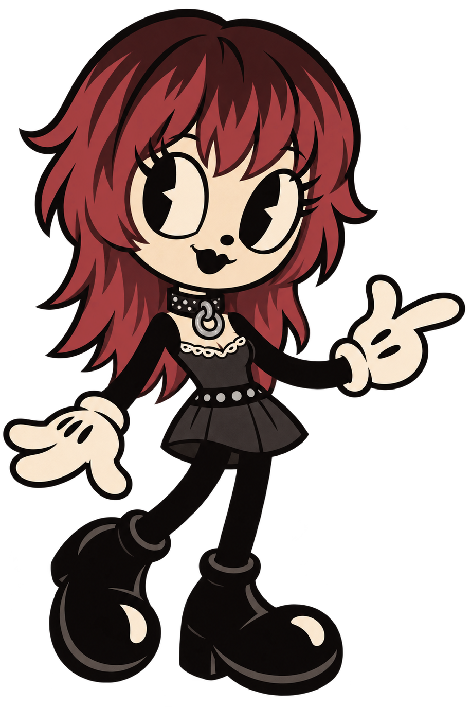
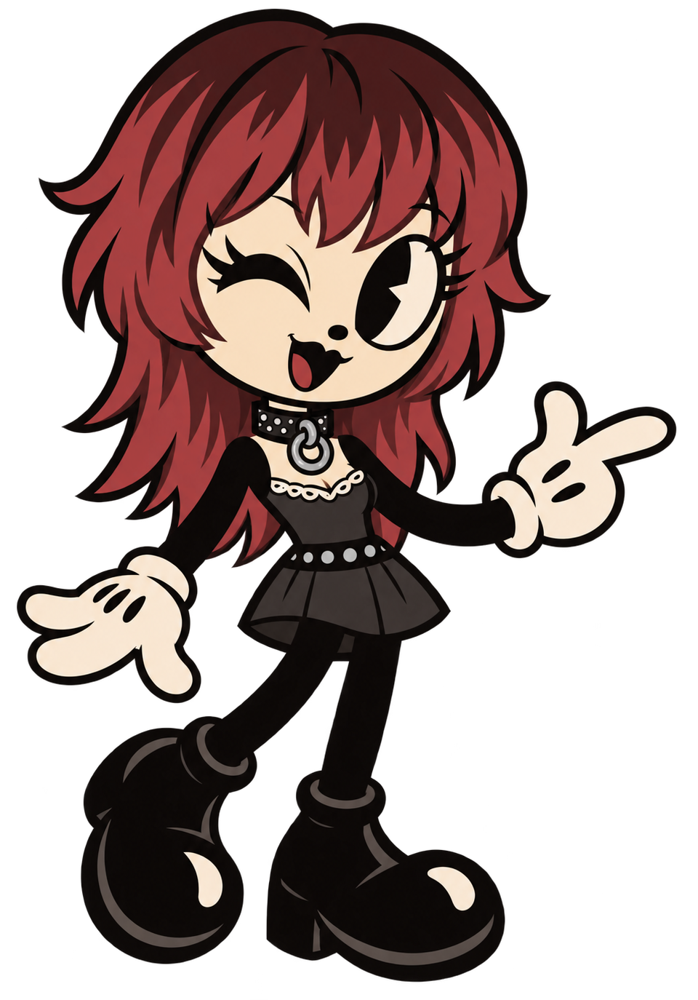

I’m Alessa, a Computer Science student at Yachay Tech. I enjoy learning about programming, artificial intelligence, and software development while exploring my creative side through art, music, and cozy video games. I am currently in my 8th semester. During university, I have worked on different academic and personal projects that have helped me discover the areas I would like to continue developing in the future. Outside university, I enjoy playing bass, drawing, reading books, and spending time with my pet, Minimi.

About Me
I am a Computer Science student interested in technology, programming, and artificial intelligence. I enjoy learning how computational systems can be used to solve real-world problems.
I am currently in my 8th semester. During my university life, I have been facing some medical conditions, although I continue my studies as best as I can.
Things That I Like
During university, I have enjoyed playing bass, playing cozy video games, reading books, and trying to improve my programming skills.

Academic Interests
My university education has allowed me to learn about programming, mathematics, algorithms, and computational methods. Throughout my studies, I have had the opportunity to explore different areas of Computer Science and understand how the concepts I learn can be applied to real-world problems.
One of the aspects I have appreciated the most about my university experience has been learning from professors with different areas of expertise and perspectives. Their classes have encouraged me to think more critically, ask questions, and approach problems from different points of view. I have learned a great deal from them, both through their courses and through the projects and research opportunities they have introduced me to.
During my studies, I have worked with technologies such as HTML, Python, Kotlin, SQL, C++, and machine learning. I am particularly interested in artificial intelligence and software development, and I hope to continue developing these skills while exploring new areas of Computer Science.
My Interests
I enjoy creating and exploring cozy, pink, and playful interfaces that combine functionality with a strong visual identity. I am particularly interested in interface design, artificial intelligence, and scientific research. I like finding ways to make technology feel more personal and engaging through colors, illustrations, typography, and small interactive details. I also enjoy combining my programming skills with my interest in art and design, which is something I hope to continue developing throughout my future projects.
Tools That I Know a Little
- HTML
- CSS
- Python
- Kotlin
- SQL
- C++
- GML (in learning)
- JavaScript (in learning)
Personal Projects
Throughout my university life, I have worked on different academic and personal projects that have allowed me to apply what I have learned and explore the areas of Computer Science that interest me the most.
| Project | My Contribution | Technologies / Skills |
|---|---|---|
| Personal Website | Designed and developed this personal university website, combining my programming skills with my interest in visual design. | HTML, CSS, JavaScript, jQuery |
| DepaYT App | Worked on the frontend and interface design of a roommate communication application. The project was developed with the help of a classmate who worked on the backend and services. | Kotlin, Jetpack Compose, Figma, Canva |
| Multiobjective Optimization Paper | Participated in a research paper where I applied knowledge of neural networks and genetic algorithms to optimization tasks. | Neural Networks, Genetic Algorithms |
| Tutoring Sessions | Worked with a classmate to provide tutoring sessions for a visually impaired student taking Advanced Programming. I focused on the theoretical lessons. | C, Linked Lists, Arrays, Pointers, malloc |
| Thesis Planning | Planning a game that combines my programming skills with my interests in art and music. | Programming, Art, Music, Game Development |
These projects have helped me understand what areas I enjoy working in and have allowed me to combine my technical and creative interests. I hope to continue developing my programming, research, art, and game development skills through future projects.